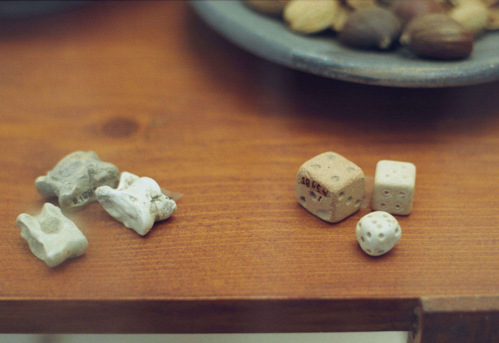
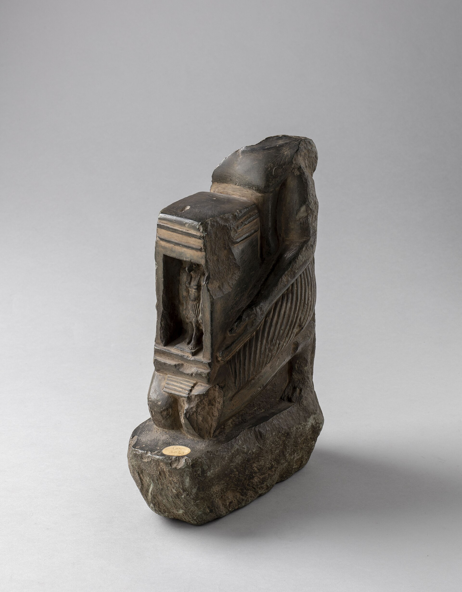
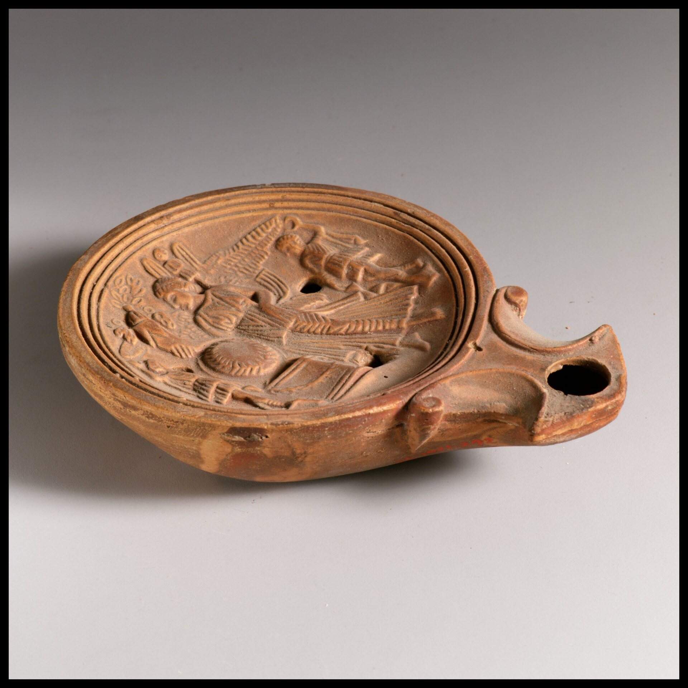
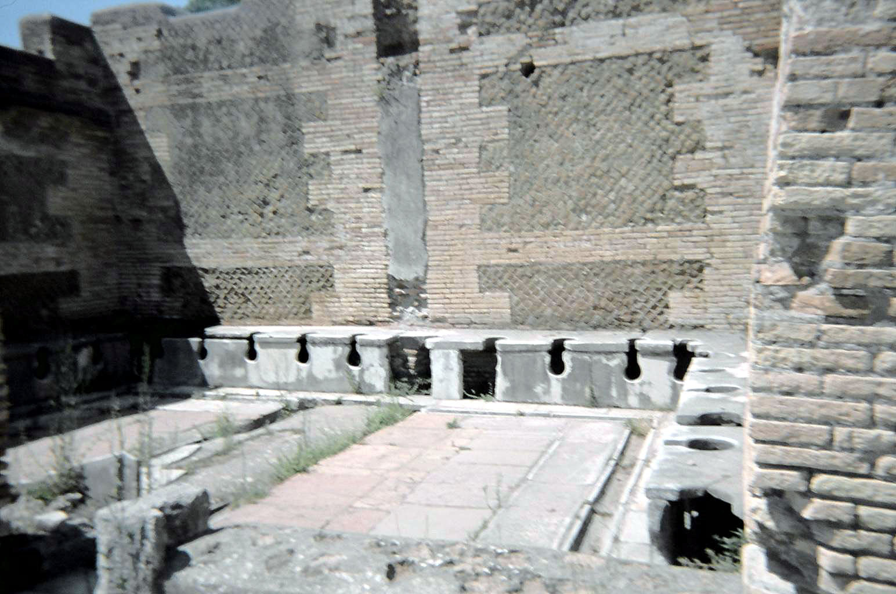
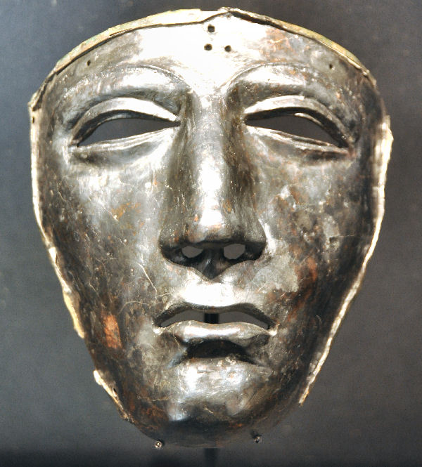
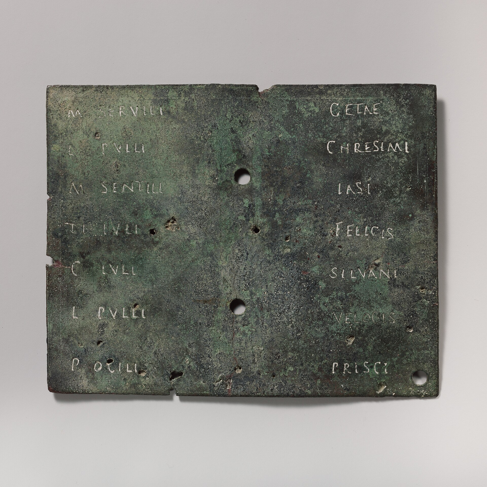
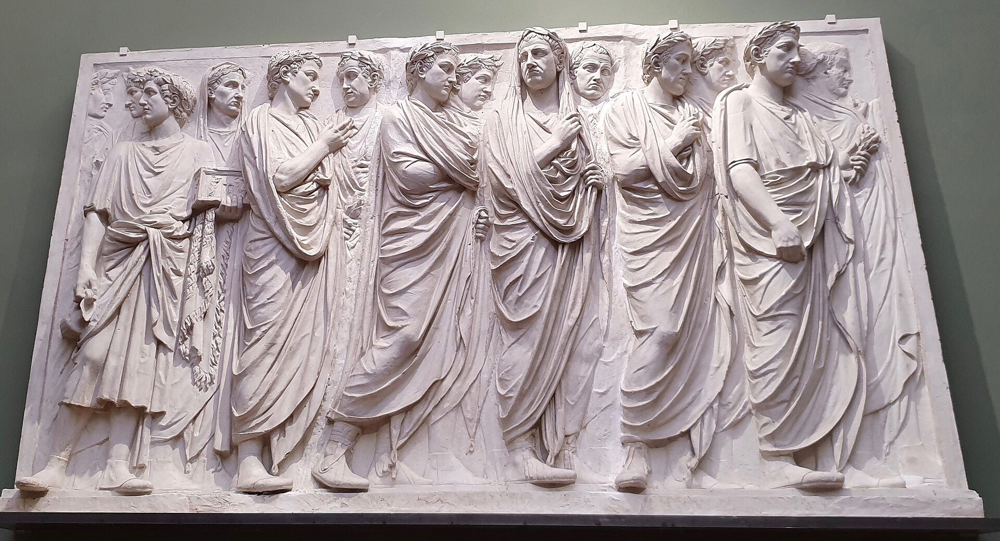
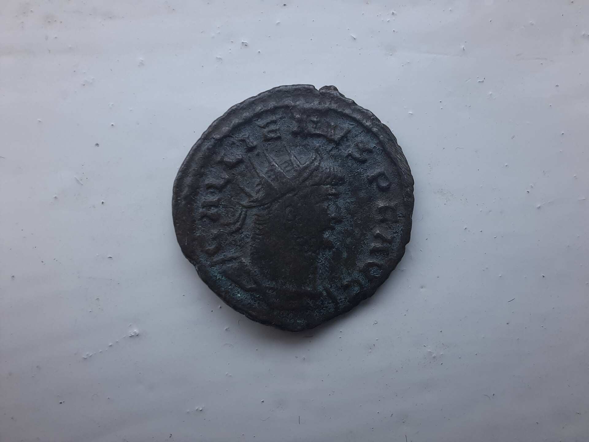
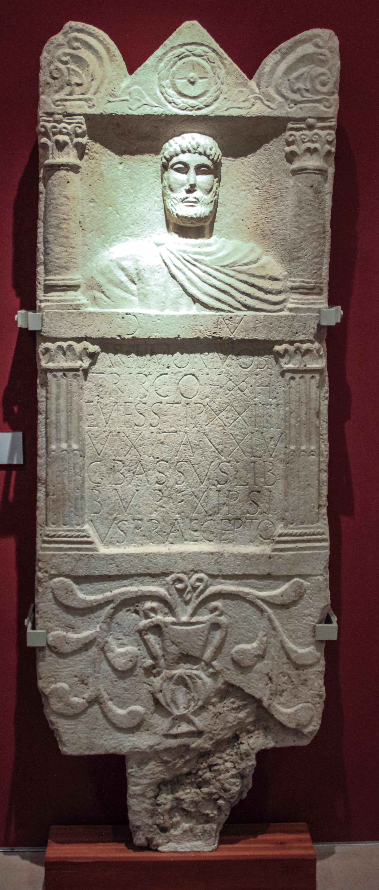

Sources & Credits
On the evidence behind these lives
Every profile is a composite — a fictional individual assembled from demographic models, archaeology, papyri, inscriptions and the literary record. The dates, mortality rates, prices, distances and events are drawn from the historical evidence; the person is not.
The illustrations are, wherever possible, real artifacts and museum photographs from Wikimedia Commons, each chosen because it connects directly to the life it accompanies. They remain under the licenses of their creators, credited below. Scenes marked “illustration to be generated” are slots for period-style illustrations still to be made.
- A Collection of Unmitigated Pedantry (ACOUP) — Bret DevereauxPublic-facing scholarship on the ancient world; the model for this project's source-linking.
- Roman demography — overviewPopulation structure and mortality behind the probability weights.
- Wikimedia CommonsSource of the museum photographs and artifacts used throughout, each credited on its page.
| Artifact | Life | Author | License | Source | |
|---|---|---|---|---|---|
 | Roman bone dice from Silchester | Site (dice) | BabelStone | CC BY-SA 3.0 | Commons |
 | Dices Roman Museum Delos ZdeDelm220 | Site (dice) | Zde | CC BY-SA 3.0 | Commons |
 | Lararium in the atrium of Casa del Menandro (Pompeii) (48442861451) | Titus Caecilius | Gary Todd from Xinzheng, China | Public domain | Commons |
 | Cherchel-Mosaic-lower-register | Titus Caecilius | Anonymous / unknown | Public domain | Commons |
 | Dominus Julius mosaic in the Bardo National Museum(12240864473) | Kalasiris | Boyd Dwyer | CC BY-SA 2.0 | Commons |
 | Roman Figurine of Bound Captive | Kalasiris | Derby Museums Trust, Charlotte Burrill, 2010-11-08 11:45:08 | CC BY-SA 4.0 | Commons |
 | Fayum mummy portrait (160-180 AD) - British museum, EA74710 | Helene | Anonymous / unknown | Public domain | Commons |
 | Statue presenting a shrine (“naophore”) with an image of the god Sobek title QS:P1476,en:"Statue presenting a shrine (“naophore”) with an image of the god Sobek "label QS:Len,"Statue presenting a shrine (“naophore”) with an image of the god Sobek "label QS:Lit,"Statua che presenta un’edicola (“naofora”) con un’immagine di Sobek" | Helene | Anonymous / unknown | CC0 | Commons |
 | Fresco portrait of the baker Terentius Neo and his wife, from Pompeii | Petronia Iusta | Chappsnet | CC BY-SA 4.0 | Commons |
 | Terracotta oil lamp | Petronia Iusta | Anonymous / unknown | CC0 | Commons |
 | Ancient Roman Public Latrine, Ostia Antica (6075060094) | Petronia Iusta | Larry from Charlottetown, PEI, Canada | CC BY 2.0 | Commons |
 | Cenotaph of Marcus Caelius, 1st centurion of Legio XVIII, who fell in the war of Varus (Battle in the Teutoburg Forest (9 AD), LVR-LandesMuseum Bonn (9510859222) | Gaius Vibius Celer | Carole Raddato from FRANKFURT, Germany | CC BY-SA 2.0 | Commons |
 | Kalkriese mask | Gaius Vibius Celer | Marco Prins | CC0 | Commons |
 | Bronze military diploma | Gaius Vibius Celer | Anonymous / unknown | CC0 | Commons |
 | Togato Barberini | Publius Valerius Messalla | Carlo Dell'Orto | CC BY-SA 4.0 | Commons |
 | Relief of the Ara Pacis Augustae with Procession-Uffizi | Publius Valerius Messalla | Yair Haklai | CC BY-SA 4.0 | Commons |
 | Thermopolium Lucius Vetutius Placidus Pompeii | Successus | Jebulon | CC0 | Commons |
 | Tavern scene from VI 14, 36 (Caupona of Salvius) by Geremia Discanno pub 1882 | Successus | Geremia Discanno (d. 1907) | Public domain | Commons |
 | Pompeii Plaster cast of a victim | Successus | Kleuske | CC BY 3.0 | Commons |
 | 'Gorgon's Head' - Bath Temple Pediment | Boudiga | nyaa_birdies_perch | CC BY 2.0 | Commons |
 | A metal curse tablet (defixio) with a complaint about the theft of a Vilbia | Boudiga | -JvL- | CC BY 2.0 | Commons |
 | Hunting Dogs Mosaic, Corinium Museum (Cirencester) (16178671784) | Boudiga | Carole Raddato from FRANKFURT, Germany | CC BY-SA 2.0 | Commons |
 | Mithras sacrificing a bulllabel QS:Lfr,"Mithra sacrifiant le taureau"label QS:Len,"Mithras sacrificing a bull"label QS:Les,"Mitra matando al toro"label QS:Lit,"Mitra uccide il toro"label QS:Lca,"Mitra sacrificant un toro" | Aurelius Diza | Anonymous / unknown | CC BY 2.0 | Commons |
 | Antoninianus of Gallienus - Obverse | Aurelius Diza | MumblerJamie | CC BY-SA 2.0 | Commons |
 | Tombstone of Aurel(ius) Monimus; RIU-05, 01193 = Schober 00229 = RHP 00328 = CBI 00402 = BfIntercisa 00007 = AE 1912, 00007: D(is) M(anibus) // Aur(elio) Monimo b(ene)f(iciario) / trib(uni) coh(ortis) oo(milliariae) H/emes(enorum) stip(endiorum) XXIIII / vixit an(nos) XLV / G() Bassus lib(ertus) / b(ene) m(erenti) p(osuit) ex ipsi/us praeceptolabel QS:Len,"Tombstone of Aurel(ius) Monimus; RIU-05, 01193 = Schober 00229 = RHP 00328 = CBI 00402 = BfIntercisa 00007 = AE 1912, 00007: D(is) M(anibus) // Aur(elio) Monimo b(ene)f(iciario) / trib(uni) coh(ortis) oo(milliariae) H/emes(enorum) stip(endiorum) XXIIII / vixit an(nos) XLV / G() Bassus lib(ertus) / b(ene) m(erenti) p(osuit) ex ipsi/us praecepto"label QS:Lhu,"Aurel(ius) Monimus sírköve" | Aurelius Diza | Anonymous / unknown | Public domain | Commons |
 | Disco de Teodosio | Flavius Marcellinus | Ángel M. Felicísimo | CC BY 3.0 | Commons |
 | Notitia Dignitatum - Primicerius notariorum | Flavius Marcellinus | Peronet Lamy (died 1453), based on Roman originals | Public domain | Commons |
 | Theodosian Walls of Constantinople, Istanbul (24053561188) | Flavius Marcellinus | Carole Raddato from FRANKFURT, Germany | CC BY-SA 2.0 | Commons |